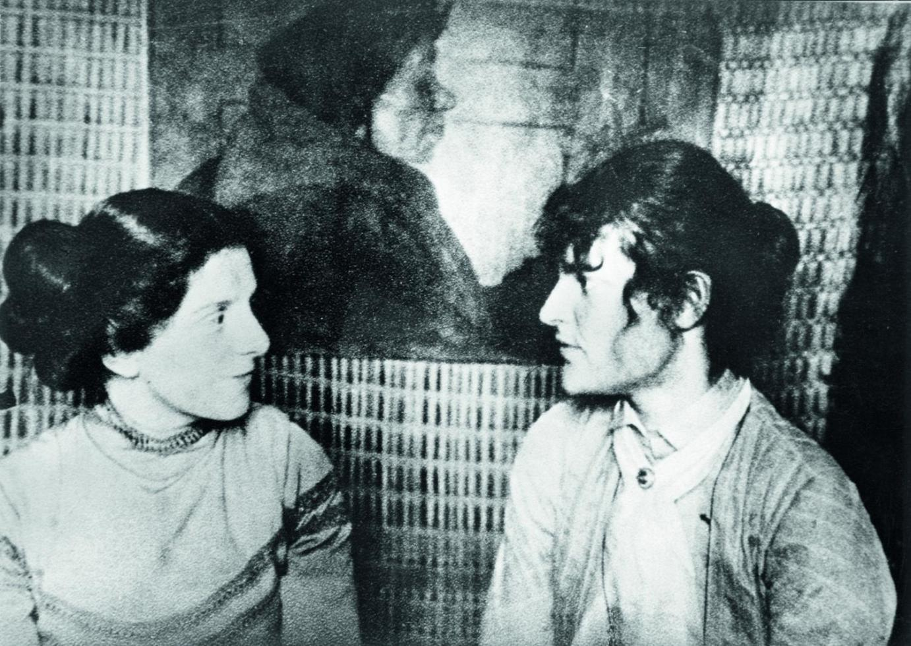

Paula Becker i Clara Westhoff
Artystki poznały się w roku 1898 w Worpswede; od razu się zaprzyjaźniły. W roku 1901 Paula poślubiła malarza Ottona Modersohna, Clara natomiast została żoną Rilkego. Te dwie kobiety łączyła nie tylko praca artystyczna, lecz również powinowactwo dusz — ich przyjaźń stała się krótkim, intensywnie przeżywanym świętem, przerwanym przez przedwczesną śmierć Pauli w roku 1907.
Paula Becker i Clara Westhoff w atelier w Worpswede. Fotografia ze zbiorów Paula Modersohn-Becker Museum, Museen Böttcherstraße.